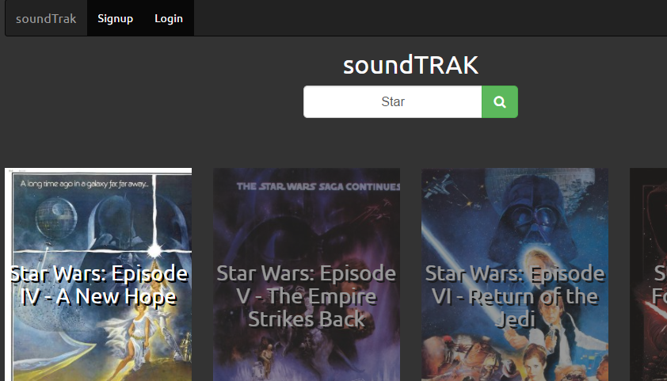
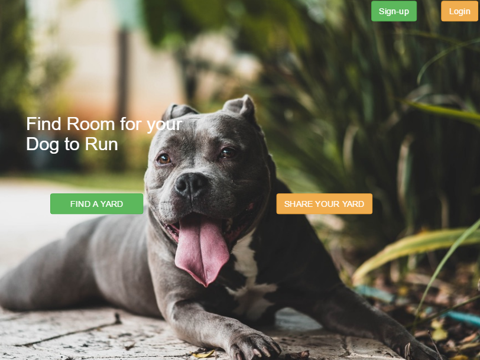

< P O R T F O L I O >

Soundtrakmore_vert
Soundtrakclose
A film soundtrack community database. The application is designed to curate a comprehensive track list for any film imaginable by tapping into the knowledge of users. Built by a team of three, Soundtrak queries the OMDB API and provides logged-in users with add/edit authorization for all films. Work on

Unleashdmore_vert
Unleashdclose
Unleashd is the culmination of 24 hours of UX/UI and developer harmony. It took second place in the "Shark Tank" judgement panel, receiving almost a third of the "funding" the "sharks" were tasked with allocating among six teams. Very much in a proof-of-concept stage, but a project that is a priority for future development and build-out.

Techno-spheremore_vert
Techno-sphereclose
Ruby on rails web log built as a personal headspace and canvas for passion projects. Site utilizes MaterializeCSS for styling, Discus comments section, and Google page analytics. First post showcases the build and set-up process for a Raspberry Pi micro-computer. Future subjects will include further learning projects.